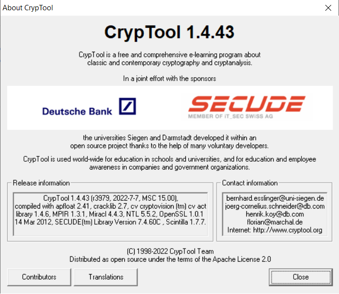

This is the starting page of the online help for "CrypTool 1" (CT1). Within
this online help, from now on the version family CT1 is just called "CrypTool".
You can find further information about the future program versions CT2 and JCT
under Future Versions CT2 and JCT.
CrypTool is a comprehensive, free e-learning program about cryptography and cryptanalysis (cryptology). The relationship of the topics cryptology, IT security and risk management is described here.
You can access the starting page of CrypTool via the menu entry Help \ Starting Page.
Interactive Demonstrations / Visualizations
Online Help, Documentation and Tutorials
Terms of the Licence / Non-Liability / Copyright
|
By pressing F1 or using the context-sensitive help via mouse you can get help everywhere in the program. Help is available for
If you are not familiar with using online help under Windows, click on How to use the CrypTool online help. Via the Starting Options you can determine which windows are opened automatically when starting CrypTool. Kindly note the terms of the license and the information regarding non-liability for any damage arising from the use of CrypTool. |
 |
CrypTool is a freeware and open source program which enables you to apply and analyze cryptographic mechanisms. It has the typical look-and-feel of Windows applications.
CrypTool contains exhaustive online help, which can be understood without extensive knowledge of cryptography.
CrypTool has been continously developed since 1998. It is available in English, German, Polish, Serbian and Spanish. Versions in Greek und Russian are currently under construction. CrypTool has implemented almost all state-of-the-art crypto functions and allows you to learn about and use cryptography within the same environment.
The methods available include both classic methods and modern cryptosystems:
A summary of all the encryption algorithms implemented in CrypTool is available in the online help page for the Encrypt/Decrypt menu.
Both, the included CrypTool presentation as well as the CrypTool web site, contain many screen shots.
If you encrypt a document the result will be shown in a new sub-window: The title of the resulting window contains both the name of the original document and the encryption key used. The usage of keys is supported by two special icons: Clicking the icon "Show key" allows you to copy the used key from a resulting window into an internal storage. If you then encrypt another document with the same encryption method the icon "Insert key" is active within the key entry dialog box. This is helpful, especially with more complex keys.
Automatic analysis tools for obtaining the key, starting from the knowledge of the encrypted document and any additional information (the unencrypted document or the language of the document), are provided for most of the classic encryption algorithms. Analysis tools against modern methods are also available (e.g. brute-force attacks against keys or factorisation attacks). For additional information on the analysis tools, see the online help page for the Analysis menu and choose the encryption algorithm to be analyzed there.
To support your own analysis of documents, CrypTool can display a histogram of the document, determine the statistics for any n-grams and calculate entropy and autocorrelation.
The encryption functions within the menu Encrypt/Decrypt are implemented in a way that they can be called upon and performed efficiently.
On the other hand, the functions in the menu Indiv. Procedures are mostly implemented in a way that they can be performed step by step and interactively. Here the e-learning aspect is the main focus.
In the menu Indiv. Procedures ("individual procedures") single different methods and protocols are offered.
For example:
The remaining menu items in the main menu "Indiv. Procedures" are described below (see RSA Cryptosystem and Visualizations).
Which menu items can be selected depends on the type of the active document (binary, text or graphics) and whether a document is open or not. All menu items are visible all the time, but only the ones which fit to the current document type can be selected. The remaining menu items are disabled.
An overview of all menu items within CrypTool can be found in the menu tree (in appendix A of the script).
Within CrypTool the modern algorithms are implemented according to international standards.
The authors of CrypTool did not implement cryptographic functionality where very good free programs were available in the internet: So dictionary attacks against password files (see John-the-Ripper, http://www.openwall.com/john/) are not part of CrypTool.
The RSA cryptosystem (see menu Indiv. Procedures \ RSA Cryptosystem \ RSA demonstration) is covered comprehensively and implemented for different codings. The RSA key can be generated from prime numbers selected by the user. Key generation, encryption and decryption can be followed step-by-step.
Factorization of numbers is also an important application for cryptography. Simple RSA cryptosystems can be easily cracked using the factorization algorithms presented in CrypTool. Thus, you get an idea of the minimum length of keys necessary for secure systems.
Remark: The factorization algorithms implemented in CT2 are faster than the ones in CT1 -- one reason is that in CT2 all cores of the CPU are used for parallel threads.
Interactive Demonstrations / Visualizations
The interactive demonstrations (visualizations) are helpful for improving the understanding of the following topics:
Besides the interactive demonstrations the CrypTool package contains the educational game The Number Shark, which trains pupils to calculate factors and to make use of prime numbers.
Online Help, Documentation, Tutorials and Crypto Challenges
During the development of CrypTool, much care has been taken to ensure that context sensitive help is available at any point by pressing the F1 key. You can get a fast overview, if you open a file and move through the menu items: Just click F1 to see details about any menu item.
The extensive online help
Besides the online help, CrypTool provides additional documentation:
In addition to the tutorials and the online help you can call from within CrypTool an Authorware computer based training about elementary number theory.
Also, a couple of encrypted files are attached to CrypTool (Klaus Schmeh
compiled most of these Crypto Puzzles
and illustrated them in his book).
Many more cryptographic challenges can be found at the website of the crypto
cipher contest
MysteryTwister C3.
CrypTool was developed jointly by companies and universities to provide an adequate teaching aid. It is also used to raise IT security awareness in programs conducted by corporations and, for the end user, to gain a deeper understanding of the concept of security.
Another objective was to demonstrate the cryptographic techniques employed in organizations. Therefore, with CrypTool as a reliable reference implementation the possibility of checking the encryption functionality of other programs exists.
Several existing libraries have been integrated into CrypTool. Thanks to the owners who allowed us to do so:
The hash functions, the modern symmetric and the asymmetric encryption algorithms and the key management functions are based on the Secude toolkit developed by Secude IT Security Ltd.
The ECC-AES hybrid encryption makes use of the cv act library by cv cryptovision GmbH (http://www.cryptovision.com/).
In order to demonstrate the RSA cryptosystem and to factorize integers CrypTool uses the long integer arithmetic of the Miracl library from DCU/CertiVox (former Shamus Software) (http://www.compapp.dcu.ie/~mike/shamus.html).
Fast calculation of huge Mersenne primes is done with the APFLOAT library of Mikko Tommila (http://www.apfloat.org/apfloat).
In order to demonstrate the hash collisions (using the birthday paradox) the library libeay32.dll from OpenSSL (http://www.openssl.org/) is used.
Victor Shoup's number theoretic library NTL (http://www.shoup.net/ntl) is used to do lattice based RSA attacks.
The MPIR library (http://mpir.org) for arbitrary precision arithmetic is used for prime number tests.
The source code of CrypTool 1.4.x is hosted by the University of Duisburg-Essen, Germany.
Information about the future roadmap can be found on the CrypTool web site, within the Readme file and in the CrypTool presentation. There, the successor projects CT2 and JCT are introduced too.
The successor versions of CT1 are CT2 and JCT. Both are already stable programs:
A summary of all the encryption algorithms implemented in all CT variants is available at the CrypTool Portal.
Terms of the License / Non-Liability / Copyright
The binary version of the CrypTool product (CrypTool.exe and other executables contained in the package) is provided free of charge to every user for training and test purposes and for the purpose of familiarisation with cryptographic methods. So CrypTool can also be used commercially. In any case the following conditions have to be fulfilled:The enclosed stories "The Dialogue of the Sisters" and "The Chinese Labyrinth" are governed by the following license terms: The author owns all rights to these stories. The maintainer of CrypTool is authorized by the author to distribute these stories only together with the CrypTool package.
The source code of the CrypTool product is distributed under the terms of the Apache License 2.0. This does neither apply to the source code of the libraries Secude toolkit, Miracl and cv act, nor to the ANIMAL system.
The open source developer group, headed by Prof. Bernhard Esslinger (esslinger@fb5.uni-siegen.de), does the maintenance. Being the maintainer means to coordinate and execute actively the further development of CrypTool as freeware and open source software. Each maintainer has committed himself to take care that:
Please note the terms of license and the information regarding non-liability for any damage arising from the use of CrypTool.
Bernhard Esslinger -- Copyright © 1998 - 2013 Deutsche Bank AG and Contributors